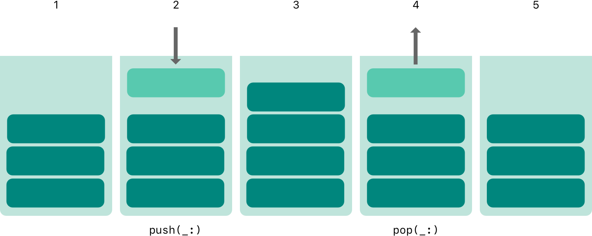
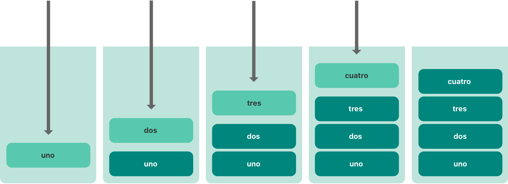
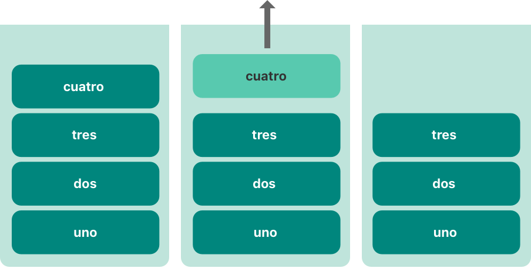

泛型代码让你能根据自定义的需求，编写出适用于任意类型的、灵活可复用的函数及类型。你可避免编写重复的代码，而是用一种清晰抽象的方式来表达代码的意图。
泛型是 Swift 最强大的特性之一，很多 Swift 标准库是基于泛型代码构建的。实际上，即使你没有意识到，你也一直在语言指南中使用泛型。例如，Swift 的 Array 和 Dictionary 都是泛型集合。你可以创建一个 Int 类型数组，也可创建一个 String 类型数组，甚至可以是任意其他 Swift 类型的数组。同样，你也可以创建一个存储任意指定类型的字典，并对该类型没有限制。
下面是一个标准的非泛型函数 swapTwoInts(_:_:)，用来交换两个 Int 值：
func swapTwoInts(_ a: inout Int, _ b: inout Int) { let temporaryA = a a = b b = temporaryA}这个函数使用输入输出参数（inout）来交换 a 和 b 的值，具体请参考 输入输出参数。
swapTwoInts(_:_:) 函数将 b 的原始值换成了 a，将 a 的原始值换成了 b，你可以调用这个函数来交换两个 Int 类型变量：
xxxxxxxxxxvar someInt = 3var anotherInt = 107swapTwoInts(&someInt, &anotherInt)print("someInt is now \(someInt), and anotherInt is now \(anotherInt)")// 打印“someInt is now 107, and anotherInt is now 3”swapTwoInts(_:_:) 函数很实用，但它只能作用于 Int 类型。如果你想交换两个 String 类型值，或者 Double 类型值，你必须编写对应的函数，类似下面 swapTwoStrings(_:_:) 和 swapTwoDoubles(_:_:) 函数：
xfunc swapTwoStrings(_ a: inout String, _ b: inout String) { let temporaryA = a a = b b = temporaryA}
func swapTwoDoubles(_ a: inout Double, _ b: inout Double) { let temporaryA = a a = b b = temporaryA}你可能注意到了，swapTwoInts(_:_:)、swapTwoStrings(_:_:) 和 swapTwoDoubles(_:_:) 函数体是一样的，唯一的区别是它们接受的参数类型（Int、String 和 Double）。
在实际应用中，通常需要一个更实用更灵活的函数来交换两个任意类型的值，幸运的是，泛型代码帮你解决了这种问题。（这些函数的泛型版本已经在下面定义好了。）
注意
在上面三个函数中，
a和b类型必须相同。如果a和b类型不同，那它们俩就不能互换值。Swift 是类型安全的语言，所以它不允许一个String类型的变量和一个Double类型的变量互换值。试图这样做将导致编译错误。
泛型函数可适用于任意类型，下面是函数 swapTwoInts(_:_:) 的泛型版本，命名为 swapTwoValues(_:_:)：
xxxxxxxxxxfunc swapTwoValues<T>(_ a: inout T, _ b: inout T) { let temporaryA = a a = b b = temporaryA}swapTwoValues(_:_:) 和 swapTwoInts(_:_:) 函数体内容相同，它们只在第一行不同，如下所示：
xxxxxxxxxxfunc swapTwoInts(_ a: inout Int, _ b: inout Int)func swapTwoValues<T>(_ a: inout T, _ b: inout T)泛型版本的函数使用占位符类型名（这里叫做 T ），而不是 实际类型名（例如 Int、String 或 Double），占位符类型名并不关心 T 具体的类型，但它要求 a 和b 必须是相同的类型，T 的实际类型由每次调用 swapTwoValues(_:_:) 来决定。
泛型函数和非泛型函数的另外一个不同之处在于这个泛型函数名（swapTwoValues(_:_:)）后面跟着占位类型名（T），并用尖括号括起来（<T>）。这个尖括号告诉 Swift 那个 T 是 swapTwoValues(_:_:) 函数定义内的一个占位类型名，因此 Swift 不会去查找名为 T的实际类型。
swapTwoValues(_:_:) 函数现在可以像 swapTwoInts(_:_:) 那样调用，不同的是它能接受两个任意类型的值，条件是这两个值有着相同的类型。swapTwoValues(_:_:) 函数被调用时，T 所代表的类型都会由传入的值的类型推断出来。
在下面的两个例子中，T 分别代表 Int 和 String：
xxxxxxxxxxvar someInt = 3var anotherInt = 107swapTwoValues(&someInt, &anotherInt)// someInt 现在是 107，anotherInt 现在是 3
var someString = "hello"var anotherString = "world"swapTwoValues(&someString, &anotherString)// someString 现在是“world”，anotherString 现在是“hello”注意
上面定义的
swapTwoValues(_:_:)函数是受swap(_:_:)函数启发而实现的。后者存在于 Swift 标准库，你可以在你的应用程序中使用它。如果你在代码中需要类似swapTwoValues(_:_:)函数的功能，你可以使用已存在的swap(_:_:)函数。
上面 swapTwoValues(_:_:) 例子中，占位类型 T 是一个类型参数的例子，类型参数指定并命名一个占位类型，并且紧随在函数名后面，使用一对尖括号括起来（例如 <T>）。
一旦一个类型参数被指定，你可以用它来定义一个函数的参数类型（例如 swapTwoValues(_:_:) 函数中的参数 a 和 b），或者作为函数的返回类型，还可以用作函数主体中的注释类型。在这些情况下，类型参数会在函数调用时被实际类型所替换。（在上面的 swapTwoValues(_:_:) 例子中，当函数第一次被调用时，T 被 Int 替换，第二次调用时，被 String 替换。）
你可提供多个类型参数，将它们都写在尖括号中，用逗号分开。
大多情况下，类型参数具有描述下的名称，例如字典 Dictionary<Key, Value> 中的 Key 和 Value 及数组 Array<Element> 中的 Element，这能告诉阅读代码的人这些参数类型与泛型类型或函数之间的关系。然而，当它们之间没有有意义的关系时，通常使用单个字符来表示，例如 T、U、V，例如上面演示函数 swapTwoValues(_:_:) 中的 T。
注意
请始终使用大写字母开头的驼峰命名法（例如
T和MyTypeParameter）来为类型参数命名，以表明它们是占位类型，而不是一个值。
除了泛型函数，Swift 还允许自定义泛型类型。这些自定义类、结构体和枚举可以适用于任意类型，类似于 Array 和 Dictionary。
本节将向你展示如何编写一个名为 Stack（栈）的泛型集合类型。栈是值的有序集合，和数组类似，但比数组有更严格的操作限制。数组允许在其中任意位置插入或是删除元素。而栈只允许在集合的末端添加新的元素（称之为入栈）。类似的，栈也只能从末端移除元素（称之为出栈）。
注意
栈的概念已被
UINavigationController类用来构造视图控制器的导航结构。你通过调用UINavigationController的pushViewController(_:animated:)方法来添加新的视图控制器到导航栈，通过popViewControllerAnimated(_:)方法来从导航栈中移除视图控制器。每当你需要一个严格的“后进先出”方式来管理集合，栈都是最实用的模型。
下图展示了入栈（push）和出栈（pop）的行为：

下面展示如何编写一个非泛型版本的栈，以 Int 型的栈为例：
xxxxxxxxxxstruct IntStack { var items: [Int] = [] mutating func push(_ item: Int) { items.append(item) } mutating func pop() -> Int { return items.removeLast() }}这个结构体在栈中使用一个名为 items 的数组属性来存储值。栈提供了两个方法：push(_:) 和 pop()，用来向栈中压入值以及从栈中移除值。这些方法被标记为 mutating，因为它们需要修改结构体的 items 数组。
上面的 IntStack 结构体只能用于 Int 类型。不过，可以定义一个泛型 Stack 结构体，从而能够处理任意类型的值。
下面是相同代码的泛型版本：
xxxxxxxxxxstruct Stack<Element> { var items: [Element] = [] mutating func push(_ item: Element) { items.append(item) } mutating func pop() -> Element { return items.removeLast() }}注意，Stack 基本上和 IntStack 相同，只是用占位类型参数 Element 代替了实际的 Int 类型。这个类型参数包裹在紧随结构体名的一对尖括号里（<Element>）。
Element 为待提供的类型定义了一个占位名。这种待提供的类型可以在结构体的定义中通过 Element 来引用。在这个例子中，Element 在如下三个地方被用作占位符：
items 属性，使用 Element 类型的空数组对其进行初始化。push(_:) 方法的唯一参数 item 的类型必须是 Element 类型。pop() 方法的返回值类型必须是 Element 类型。由于 Stack 是泛型类型，因此可以用来创建适用于 Swift 中任意有效类型的栈，就像 Array 和 Dictionary 那样。
你可以通过在尖括号中写出栈中需要存储的数据类型来创建并初始化一个 Stack 实例。例如，要创建一个 String 类型的栈，可以写成 Stack<String>()：
xxxxxxxxxxvar stackOfStrings = Stack<String>()stackOfStrings.push("uno")stackOfStrings.push("dos")stackOfStrings.push("tres")stackOfStrings.push("cuatro")// 栈中现在有 4 个字符串下图展示了 stackOfStrings 如何将这四个值压栈：

移除并返回栈顶部的值“cuatro”，即出栈：
xxxxxxxxxxlet fromTheTop = stackOfStrings.pop()// fromTheTop 的值为“cuatro”，现在栈中还有 3 个字符串下图展示了如何将顶部的值出栈：

当对泛型类型进行扩展时，你并不需要提供类型参数列表作为定义的一部分。原始类型定义中声明的类型参数列表在扩展中可以直接使用，并且这些来自原始类型中的参数名称会被用作原始定义中类型参数的引用。
下面的例子扩展了泛型类型 Stack，为其添加了一个名为 topItem 的只读计算型属性，它将会返回当前栈顶元素且不会将其从栈中移除：
xxxxxxxxxxextension Stack { var topItem: Element? { return items.isEmpty ? nil : items[items.count - 1] }}topItem 属性会返回 Element 类型的可选值。当栈为空的时候，topItem 会返回 nil；当栈不为空的时候，topItem 会返回 items 数组中的最后一个元素。
注意：这个扩展并没有定义类型参数列表。相反的，Stack 类型已有的类型参数名称 Element，被用在扩展中来表示计算型属性 topItem 的可选类型。
计算型属性 topItem 现在可以用来访问任意 Stack 实例的顶端元素且不移除它：
xxxxxxxxxxif let topItem = stackOfStrings.topItem { print("The top item on the stack is \(topItem).")}// 打印“The top item on the stack is tres.”泛型类型的扩展，还可以包括类型扩展需要额外满足的条件，从而对类型添加新功能，这一部分将在 具有泛型 Where 子句的扩展 中进行讨论。
swapTwoValues(_:_:) 函数和 Stack 适用于任意类型。不过，如果能对泛型函数或泛型类型中添加特定的类型约束，这将在某些情况下非常有用。类型约束指定类型参数必须继承自指定类、遵循特定的协议或协议组合。
例如，Swift 的 Dictionary 类型对字典的键的类型做了些限制。在 字典的描述 中，字典键的类型必须是可哈希（hashable）的。也就是说，必须有一种方法能够唯一地表示它。字典键之所以要是可哈希的，是为了便于检查字典中是否已经包含某个特定键的值。若没有这个要求，字典将无法判断是否可以插入或替换某个指定键的值，也不能查找到已经存储在字典中的指定键的值。
这个要求通过 Dictionary 键类型上的类型约束实现，它指明了键必须遵循 Swift 标准库中定义的 Hashable 协议。所有 Swift 的基本类型（例如 String、Int、Double 和 Bool）默认都是可哈希的。如何让自定义类型遵循 Hashable 协议，可以查看文档 遵循 Hashable 协议。
当自定义泛型类型时，你可以定义你自己的类型约束，这些约束将提供更为强大的泛型编程能力。像 可哈希（hashable） 这种抽象概念根据它们的概念特征来描述类型，而不是它们的具体类型。
在一个类型参数名后面放置一个类名或者协议名，并用冒号进行分隔，来定义类型约束。下面将展示泛型函数约束的基本语法（与泛型类型的语法相同）：
xxxxxxxxxxfunc someFunction<T: SomeClass, U: SomeProtocol>(someT: T, someU: U) { // 这里是泛型函数的函数体部分}上面这个函数有两个类型参数。第一个类型参数 T 必须是 SomeClass 子类；第二个类型参数 U 必须符合 SomeProtocol 协议。
这里有个名为 findIndex(ofString:in:) 的非泛型函数，该函数的功能是在一个 String 数组中查找给定 String 值的索引。若查找到匹配的字符串，findIndex(ofString:in:) 函数返回该字符串在数组中的索引值，否则返回 nil：
xxxxxxxxxxfunc findIndex(ofString valueToFind: String, in array: [String]) -> Int? { for (index, value) in array.enumerated() { if value == valueToFind { return index } } return nil}findIndex(ofString:in:) 函数可以用于查找字符串数组中的某个字符串值：
xxxxxxxxxxlet strings = ["cat", "dog", "llama", "parakeet", "terrapin"]if let foundIndex = findIndex(ofString: "llama", in: strings) { print("The index of llama is \(foundIndex)")}// 打印“The index of llama is 2”如果只能查找字符串在数组中的索引，用处不是很大。不过，你可以用占位类型 T 替换 String 类型来写出具有相同功能的泛型函数 findIndex(_:_:)。
下面展示了 findIndex(ofString:in:) 函数的泛型版本 findIndex(of:in:)。请注意这个函数返回值的类型仍然是 Int?，这是因为函数返回的是一个可选的索引数，而不是从数组中得到的一个可选值。需要提醒的是，这个函数无法通过编译，原因将在后面说明：
xxxxxxxxxxfunc findIndex<T>(of valueToFind: T, in array:[T]) -> Int? { for (index, value) in array.enumerated() { if value == valueToFind { return index } } return nil}上面所写的函数无法通过编译。问题出在相等性检查上，即 "if value == valueToFind"。不是所有的 Swift 类型都可以用等式符（==）进行比较。例如，如果你自定义类或结构体来描述复杂的数据模型，对于这个类或结构体而言，Swift 无法明确知道“相等”意味着什么。正因如此，这部分代码无法保证适用于任意类型 T，当你试图编译这部分代码时就会出现相应的错误。
不过，所有的这些并不会让我们无从下手。Swift 标准库中定义了一个 Equatable 协议，该协议要求任何遵循该协议的类型必须实现等式符（==）及不等符（!=），从而能对该类型的任意两个值进行比较。所有的 Swift 标准类型自动支持 Equatable 协议。
遵循 Equatable 协议的类型都可以安全地用于 findIndex(of:in:) 函数，因为其保证支持等式操作符。为了说明这个事情，当定义一个函数时，你可以定义一个 Equatable 类型约束作为类型参数定义的一部分：
xxxxxxxxxxfunc findIndex<T: Equatable>(of valueToFind: T, in array:[T]) -> Int? { for (index, value) in array.enumerated() { if value == valueToFind { return index } } return nil}findIndex(of:in:) 类型参数写做 T: Equatable，也就意味着“任何符合 Equatable 协议的类型 T”。
findIndex(of:in:) 函数现在可以成功编译了，并且适用于任何符合 Equatable 的类型，如 Double 或 String：
xxxxxxxxxxlet doubleIndex = findIndex(of: 9.3, in: [3.14159, 0.1, 0.25])// doubleIndex 类型为 Int?，其值为 nil，因为 9.3 不在数组中let stringIndex = findIndex(of: "Andrea", in: ["Mike", "Malcolm", "Andrea"])// stringIndex 类型为 Int?，其值为 2定义一个协议时，声明一个或多个关联类型作为协议定义的一部分将会非常有用。关联类型为协议中的某个类型提供了一个占位符名称，其代表的实际类型在协议被遵循时才会被指定。关联类型通过 associatedtype 关键字来指定。
下面例子定义了一个 Container 协议，该协议定义了一个关联类型 Item：
xxxxxxxxxxprotocol Container { associatedtype Item mutating func append(_ item: Item) var count: Int { get } subscript(i: Int) -> Item { get }}Container 协议定义了三个任何遵循该协议的类型（即容器）必须提供的功能：
append(_:) 方法添加一个新元素到容器里。count 属性获取容器中元素的数量，并返回一个 Int 值。Int 的下标检索到容器中的每一个元素。该协议没有指定容器中元素该如何存储以及元素类型。该协议只指定了任何遵从 Container 协议的类型必须提供的三个功能。遵从协议的类型在满足这三个条件的情况下，也可以提供其他额外的功能。
任何遵从 Container 协议的类型必须能够指定其存储的元素的类型。具体来说，它必须确保添加到容器内的元素以及下标返回的元素类型是正确的。
为了定义这些条件，Container 协议需要在不知道容器中元素的具体类型的情况下引用这种类型。Container 协议需要指定任何通过 append(_:) 方法添加到容器中的元素和容器内的元素是相同类型，并且通过容器下标返回的元素的类型也是这种类型。
为此，Container 协议声明了一个关联类型 Item，写作 associatedtype Item。协议没有定义 Item 是什么，这个信息留给遵从协议的类型来提供。尽管如此，Item 别名提供了一种方式来引用 Container 中元素的类型，并将之用于 append(_:) 方法和下标，从而保证任何 Container 的行为都能如预期。
这是前面非泛型版本 IntStack 类型，使其遵循 Container 协议：
xxxxxxxxxxstruct IntStack: Container { // IntStack 的原始实现部分 var items: [Int] = [] mutating func push(_ item: Int) { items.append(item) } mutating func pop() -> Int { return items.removeLast() } // Container 协议的实现部分 typealias Item = Int mutating func append(_ item: Int) { self.push(item) } var count: Int { return items.count } subscript(i: Int) -> Int { return items[i] }}IntStack 结构体实现了 Container 协议的三个要求，其原有功能也不会和这些要求相冲突。
此外，IntStack 在实现 Container 的要求时，指定 Item 为 Int 类型，即 typealias Item = Int，从而将 Container 协议中抽象的 Item 类型转换为具体的 Int 类型。
由于 Swift 的类型推断，实际上在 IntStack 的定义中不需要声明 Item 为 Int。因为 IntStack 符合 Container 协议的所有要求，Swift 只需通过 append(_:) 方法的 item 参数类型和下标返回值的类型，就可以推断出 Item 的具体类型。事实上，如果你在上面的代码中删除了 typealias Item = Int 这一行，一切也可正常工作，因为 Swift 清楚地知道 Item 应该是哪种类型。
你也可以让泛型 Stack 结构体遵循 Container 协议：
xxxxxxxxxxstruct Stack<Element>: Container { // Stack<Element> 的原始实现部分 var items: [Element] = [] mutating func push(_ item: Element) { items.append(item) } mutating func pop() -> Element { return items.removeLast() } // Container 协议的实现部分 mutating func append(_ item: Element) { self.push(item) } var count: Int { return items.count } subscript(i: Int) -> Element { return items[i] }}这一次，占位类型参数 Element 被用作 append(_:) 方法的 item 参数和下标的返回类型。Swift 可以据此推断出 Element 的类型即是 Item 的类型。
在扩展添加协议一致性 中描述了如何利用扩展让一个已存在的类型遵循一个协议，这包括使用了关联类型协议。
Swift 的 Array 类型已经提供 append(_:) 方法，count 属性，以及带有 Int 索引的下标来检索其元素。这三个功能都符合 Container 协议的要求，也就意味着你只需声明 Array 遵循Container 协议，就可以扩展 Array，使其遵从 Container 协议。你可以通过一个空扩展来实现这点，正如通过扩展采纳协议中的描述：
xxxxxxxxxxextension Array: Container {}Array 的 append(_:) 方法和下标确保了 Swift 可以推断出 Item 具体类型。定义了这个扩展后，你可以将任意 Array 当作 Container 来使用。
你可以在协议里给关联类型添加约束来要求遵循的类型满足约束。例如，下面的代码定义了 Container 协议， 要求关联类型 Item 必须遵循 Equatable 协议：
xxxxxxxxxxprotocol Container { associatedtype Item: Equatable mutating func append(_ item: Item) var count: Int { get } subscript(i: Int) -> Item { get }}要遵守 Container 协议，Item 类型也必须遵守 Equatable 协议。
协议可以作为它自身的要求出现。例如，有一个协议细化了 Container 协议，添加了一个suffix(_:) 方法。suffix(_:) 方法返回容器中从后往前给定数量的元素，并把它们存储在一个 Suffix 类型的实例里。
xxxxxxxxxxprotocol SuffixableContainer: Container { associatedtype Suffix: SuffixableContainer where Suffix.Item == Item func suffix(_ size: Int) -> Suffix}在这个协议里，Suffix 是一个关联类型，就像上边例子中 Container 的 Item 类型一样。Suffix 拥有两个约束：它必须遵循 SuffixableContainer 协议（就是当前定义的协议），以及它的 Item 类型必须是和容器里的 Item 类型相同。Item 的约束是一个 where 分句，它在下面 具有泛型 Where 子句的扩展 中有讨论。
这是上面 泛型类型 中 Stack 类型的扩展，它遵循了 SuffixableContainer 协议：
xxxxxxxxxxextension Stack: SuffixableContainer { func suffix(_ size: Int) -> Stack { var result = Stack() for index in (count-size)..<count { result.append(self[index]) } return result } // 推断 suffix 结果是Stack。}var stackOfInts = Stack<Int>()stackOfInts.append(10)stackOfInts.append(20)stackOfInts.append(30)let suffix = stackOfInts.suffix(2)// suffix 包含 20 和 30在上面的例子中，Suffix 是 Stack 的关联类型，也是 Stack ，所以 Stack 的后缀运算返回另一个 Stack 。另外，遵循 SuffixableContainer 的类型可以拥有一个与它自己不同的 Suffix 类型——也就是说后缀运算可以返回不同的类型。比如说，这里有一个非泛型 IntStack 类型的扩展，它遵循了 SuffixableContainer 协议，使用 Stack<Int> 作为它的后缀类型而不是 IntStack：
xxxxxxxxxxextension IntStack: SuffixableContainer { func suffix(_ size: Int) -> Stack<Int> { var result = Stack<Int>() for index in (count-size)..<count { result.append(self[index]) } return result } // 推断 suffix 结果是 Stack<Int>。}类型约束 让你能够为泛型函数、下标、类型的类型参数定义一些强制要求。
对关联类型添加约束通常是非常有用的。你可以通过定义一个泛型 where 子句来实现。通过泛型 where 子句让关联类型遵从某个特定的协议，以及某个特定的类型参数和关联类型必须类型相同。你可以通过将 where 关键字紧跟在类型参数列表后面来定义 where 子句，where 子句后跟一个或者多个针对关联类型的约束，以及一个或多个类型参数和关联类型间的相等关系。你可以在函数体或者类型的大括号之前添加 where 子句。
下面的例子定义了一个名为 allItemsMatch 的泛型函数，用来检查两个 Container 实例是否包含相同顺序的相同元素。如果所有的元素能够匹配，那么返回 true，否则返回 false。
被检查的两个 Container 可以不是相同类型的容器（虽然它们可以相同），但它们必须拥有相同类型的元素。这个要求通过一个类型约束以及一个 where 子句来表示：
xxxxxxxxxxfunc allItemsMatch<C1: Container, C2: Container> (_ someContainer: C1, _ anotherContainer: C2) -> Bool where C1.Item == C2.Item, C1.Item: Equatable {
// 检查两个容器含有相同数量的元素 if someContainer.count != anotherContainer.count { return false }
// 检查每一对元素是否相等 for i in 0..<someContainer.count { if someContainer[i] != anotherContainer[i] { return false } }
// 所有元素都匹配，返回 true return true}这个函数接受 someContainer 和 anotherContainer 两个参数。参数 someContainer 的类型为 C1，参数 anotherContainer 的类型为 C2。C1 和 C2 是容器的两个占位类型参数，函数被调用时才能确定它们的具体类型。
这个函数的类型参数列表还定义了对两个类型参数的要求：
C1 必须符合 Container 协议（写作 C1: Container）。C2 必须符合 Container 协议（写作 C2: Container）。C1 的 Item 必须和 C2 的 Item 类型相同（写作 C1.Item == C2.Item）。C1 的 Item 必须符合 Equatable 协议（写作 C1.Item: Equatable）。前两个要求定义在函数的类型形式参数列表里，后两个要求定义在了函数的泛型 where 分句中。
这些要求意味着：
someContainer 是一个 C1 类型的容器。anotherContainer 是一个 C2 类型的容器。someContainer 和 anotherContainer 包含相同类型的元素。someContainer 中的元素可以通过不等于操作符（!=）来检查它们是否相同。第三个和第四个要求结合起来意味着 anotherContainer 中的元素也可以通过 != 操作符来比较，因为它们和 someContainer 中的元素类型相同。
这些要求让 allItemsMatch(_:_:) 函数能够比较两个容器，即使它们的容器类型不同。
allItemsMatch(_:_:) 函数首先检查两个容器元素个数是否相同，如果元素个数不同，那么一定不匹配，函数就会返回 false。
进行这项检查之后，通过 for-in 循环和半闭区间操作符（..<）来迭代每个元素，检查 someContainer 中的元素是否不等于 anotherContainer 中的对应元素。如果两个元素不相等，那么两个容器不匹配，函数返回 false。
如果循环体结束后未发现任何不匹配的情况，表明两个容器匹配，函数返回 true。
下面是 allItemsMatch(_:_:) 函数的示例：
xxxxxxxxxxvar stackOfStrings = Stack<String>()stackOfStrings.push("uno")stackOfStrings.push("dos")stackOfStrings.push("tres")
var arrayOfStrings = ["uno", "dos", "tres"]
if allItemsMatch(stackOfStrings, arrayOfStrings) { print("All items match.")} else { print("Not all items match.")}// 打印“All items match.”上面的例子创建 Stack 实例来存储 String 值，然后将三个字符串压栈。这个例子还通过数组字面量创建了一个 Array 实例，数组中包含同栈中一样的三个字符串。即使栈和数组是不同的类型，但它们都遵从 Container 协议，而且它们都包含相同类型的值。因此你可以用这两个容器作为参数来调用 allItemsMatch(_:_:) 函数。在上面的例子中，allItemsMatch(_:_:) 函数正确地显示了这两个容器中的所有元素都是相互匹配的。
你也可以使用泛型 where 子句作为扩展的一部分。基于以前的例子，下面的示例扩展了泛型 Stack 结构体，添加一个 isTop(_:) 方法。
xxxxxxxxxxextension Stack where Element: Equatable { func isTop(_ item: Element) -> Bool { guard let topItem = items.last else { return false } return topItem == item }}这个新的 isTop(_:) 方法首先检查这个栈是不是空的，然后比较给定的元素与栈顶部的元素。如果你尝试不用泛型 where 子句，会有一个问题：在 isTop(_:) 里面使用了 == 运算符，但是 Stack 的定义没有要求它的元素是符合 Equatable 协议的，所以使用 == 运算符导致编译时错误。使用泛型 where 子句可以为扩展添加新的条件，因此只有当栈中的元素符合 Equatable 协议时，扩展才会添加 isTop(_:) 方法。
以下是 isTop(_:) 方法的调用方式：
xxxxxxxxxxif stackOfStrings.isTop("tres") { print("Top element is tres.")} else { print("Top element is something else.")}// 打印“Top element is tres.”如果尝试在其元素不符合 Equatable 协议的栈上调用 isTop(_:) 方法，则会收到编译时错误。
xxxxxxxxxxstruct NotEquatable { }var notEquatableStack = Stack<NotEquatable>()let notEquatableValue = NotEquatable()notEquatableStack.push(notEquatableValue)notEquatableStack.isTop(notEquatableValue) // 报错你可以使用泛型 where 子句去扩展一个协议。基于以前的示例，下面的示例扩展了 Container 协议，添加一个 startsWith(_:) 方法。
xxxxxxxxxxextension Container where Item: Equatable { func startsWith(_ item: Item) -> Bool { return count >= 1 && self[0] == item }}这个 startsWith(_:) 方法首先确保容器至少有一个元素，然后检查容器中的第一个元素是否与给定的元素相等。任何符合 Container 协议的类型都可以使用这个新的 startsWith(_:) 方法，包括上面使用的栈和数组，只要容器的元素是符合 Equatable 协议的。
xxxxxxxxxxif [9, 9, 9].startsWith(42) { print("Starts with 42.")} else { print("Starts with something else.")}// 打印“Starts with something else.”上述示例中的泛型 where 子句要求 Item 遵循协议，但也可以编写一个泛型 where 子句去要求 Item 为特定类型。例如：
xxxxxxxxxxextension Container where Item == Double { func average() -> Double { var sum = 0.0 for index in 0..<count { sum += self[index] } return sum / Double(count) }}print([1260.0, 1200.0, 98.6, 37.0].average())// 打印“648.9”此示例将一个 average() 方法添加到 Item 类型为 Double 的容器中。此方法遍历容器中的元素将其累加，并除以容器的数量计算平均值。它将数量从 Int 转换为 Double 确保能够进行浮点除法。
就像可以在其他地方写泛型 where 子句一样，你可以在一个泛型 where 子句中包含多个条件作为扩展的一部分。用逗号分隔列表中的每个条件。
当你使用泛型时，可以为没有独立类型约束的声明添加 where 分句。例如，你可以使用 where 分句为泛型添加下标，或为扩展方法添加泛型约束。Container 结构体是个泛型，下面的例子通过 where 分句让新的方法声明其调用所需要满足的类型约束。
xxxxxxxxxxextension Container { func average() -> Double where Item == Int { var sum = 0.0 for index in 0..<count { sum += Double(self[index]) } return sum / Double(count) } func endsWith(_ item: Item) -> Bool where Item: Equatable { return count >= 1 && self[count-1] == item }}let numbers = [1260, 1200, 98, 37]print(numbers.average())// 输出 "648.75"print(numbers.endsWith(37))// 输出 "true"例子中，当 Item 是整型时为 Container 添加 average() 方法，当 Item 遵循 Equatable 时添加 endsWith(_:) 方法。两个方法都通过 where 分句对 Container 中定义的泛型 Item 进行了约束。
如果不使用包含上下文关系的 where 分句，需要写两个扩展，并为每个扩展分别加上 where 分句。下面的例子和上面的具有相同效果。
xxxxxxxxxxextension Container where Item == Int { func average() -> Double { var sum = 0.0 for index in 0..<count { sum += Double(self[index]) } return sum / Double(count) }}extension Container where Item: Equatable { func endsWith(_ item: Item) -> Bool { return count >= 1 && self[count-1] == item }}在包含上下文关系的 where 分句的例子中，由于每个方法的 where 分句各自声明了需要满足的条件，因此 average() 和 endsWith(_:) 的实现能放在同一个扩展里。而将 where 分句放在扩展进行声明也能起到同样的效果，但每一个扩展只能有一个必备条件。
你可以在关联类型后面加上具有泛型 where 的子句。例如，建立一个包含迭代器（Iterator）的容器，就像是标准库中使用的 Sequence 协议那样。你应该这么写：
xxxxxxxxxxprotocol Container { associatedtype Item mutating func append(_ item: Item) var count: Int { get } subscript(i: Int) -> Item { get }
associatedtype Iterator: IteratorProtocol where Iterator.Element == Item func makeIterator() -> Iterator}迭代器（Iterator）的泛型 where 子句要求：无论迭代器是什么类型，迭代器中的元素类型，必须和容器项目的类型保持一致。makeIterator() 则提供了容器的迭代器的访问接口。
一个协议继承了另一个协议，你通过在协议声明的时候，包含泛型 where 子句，来添加了一个约束到被继承协议的关联类型。例如，下面的代码声明了一个 ComparableContainer 协议，它要求所有的 Item 必须是 Comparable 的。
xxxxxxxxxxprotocol ComparableContainer: Container where Item: Comparable { }下标可以是泛型，它们能够包含泛型 where 子句。你可以在 subscript 后用尖括号来写占位符类型，你还可以在下标代码块花括号前写 where 子句。例如：
xxxxxxxxxxextension Container { subscript<Indices: Sequence>(indices: Indices) -> [Item] where Indices.Iterator.Element == Int { var result: [Item] = [] for index in indices { result.append(self[index]) } return result }}这个 Container 协议的扩展添加了一个下标方法，接收一个索引的集合，返回每一个索引所在的值的数组。这个泛型下标的约束如下：
Indices，必须是符合标准库中的 Sequence 协议的类型。indices，必须是 Indices 的实例。where 子句要求 Sequence（Indices）的迭代器，其所有的元素都是 Int 类型。这样就能确保在序列（Sequence）中的索引和容器（Container）里面的索引类型是一致的。综合一下，这些约束意味着，传入到 indices 下标，是一个整型的序列。